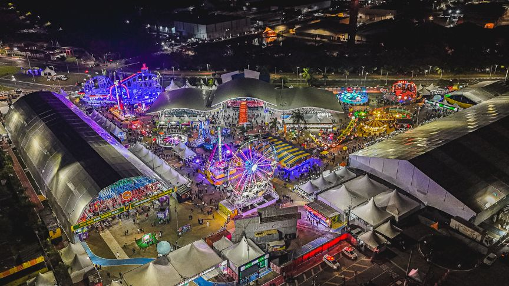

Destaque do Mês: Festa Junina de Votorantim 2026

Prepare-se para a maior edição de todos os tempos! A Festa Junina de Votorantim 2026 trará uma constelação de artistas nacionais, unindo a tradição das barracas típicas com shows inesquecíveis. Fique ligado na nossa aba de eventos para conferir o line-up completo!